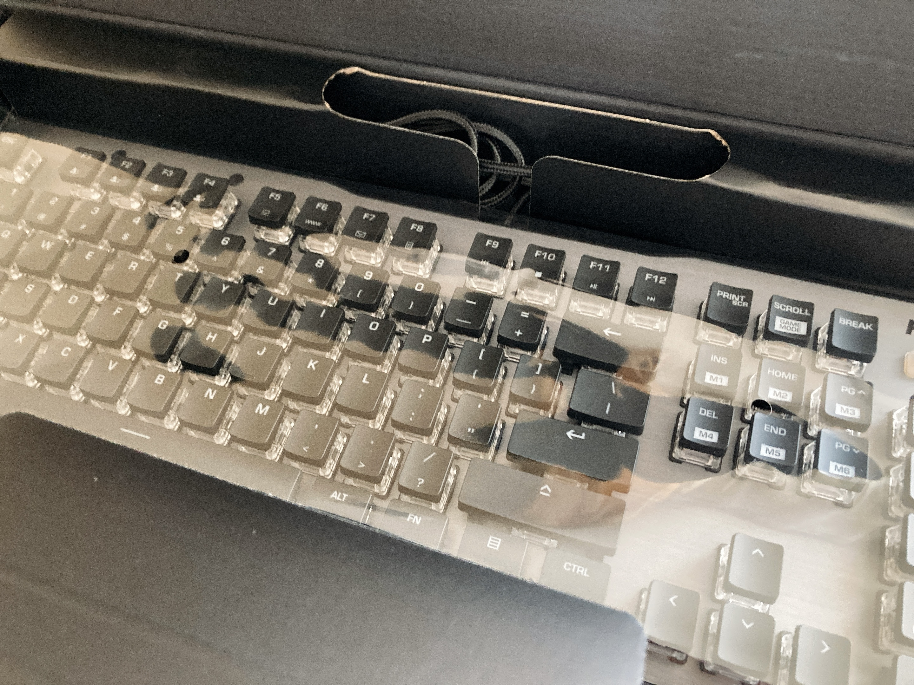

新しい子がお嫁に来ました
自室改造計画が着々と進みつつあります。いろんなものが部屋に増えてちょっとてんやわんやしてますね。まだ掃除終わってないんだけど……www
今日は新しい子がお嫁に来ました。というのも。
キーボードちゃんです。いや外装めちゃくちゃ見た目ゲーミングで草。選んだ理由は一応見た目ではないのですが……。
せっかくだし新しいキーボード買うかあという話になって、秋葉原のあらゆる店で一通りかしゃかしゃやって一番よさみが深かったのがこの子でした。元から茶軸と隙間がガッツリ空いたキー配置が性癖であることが知られていて、そこにUSキーという要件を追加した結果。

いい感じにスケルトンで素敵。かわいいね。
想像以上にガッツリ光ってどうしようかになっている() おいおい設定はするけれども。
ひょんなことからUSキーを触る機会を得て、セミコロンの位置に惚れて半ば衝動的に乗り換えてしまった。エンターキーが小さいという話を予め聞いていたけれど、むしろホームポジションからの移動が小さいおかげでエンターキーに関しては押し間違いという概念が消滅した。まだ記号配置を覚え切れていないのと、そもそもの物理的なストロークの深さに慣れていないのとでミス自体はちらほらあるけれど、慣れたらつよつよになれるかもしれない。
あともう一つよさみな要素として、スペースキーが長い。これの何がいいかと言うと、Caelytaが圧倒的に遊びやすい。今まで林檎ブックのペラペラキーボードでなんとかやりくりしていた人間からすると、Caelytaがそれはそれはもう遊びやすくて素晴らしい。
982828点でCLEAR!
— ₍₍⁽⁽🍳₎₎⁾⁾@1229関西 (@sal_pipr) August 25, 2021
Suzuka - Inferno Sign[HARD]
https://t.co/oHFYiI4HFX #Caelyta
楽になった筆頭と言えばInferno Sign中盤の下ノーツトリル。基本的に下ノーツは右親指で捌く癖がついているんだけど、それでどうしようもない最たる例がこれで、長めスペースキーのよさをひしひしと感じられる。
そもそも今までよりもいいキーボードを買ったわけで、同一キーの高速連打を要求される譜面につよくなった。Caelytaにはいくつか「人差し指と中指ならある程度高速なトリル連打降ってきても大丈夫やろ🤪」って感じの譜面があって、そういうのはこのキーボードちゃん初日なのにも関わらずごりごりスコアが伸び始めてる感触がある。Oriental RitualとかTo PastとかRespectとか。
990116点でCLEAR!
— ₍₍⁽⁽🍳₎₎⁾⁾@1229関西 (@sal_pipr) August 25, 2021
Sh.r-Y - Oriental Ritual[HARD]
https://t.co/oHFYiI4HFX #Caelyta
992380点でFULL COMBO!!
— ₍₍⁽⁽🍳₎₎⁾⁾@1229関西 (@sal_pipr) August 25, 2021
Halv - To Past[HARD]
https://t.co/oHFYiI4HFX #Caelyta
高速トリルの精度もよくなりそうね。Cosmofishとか。
991634点でCLEAR!
— ₍₍⁽⁽🍳₎₎⁾⁾@1229関西 (@sal_pipr) August 25, 2021
ラキマウ - Cosmofish[HARD]
https://t.co/oHFYiI4HFX #Caelyta
逆に、今まで林檎ブックのキーストロークが浅いのに甘えてベチャ押しでなんとかしていた階段は慣れるまで精度が厳しいかもしれない。Prima Vistaとか。
さっきも茶軸が性癖と書いたけれど、青軸ほど主張の激しいカチカチではなく、でも絶妙に心地よいかしゃかしゃ感がとってもすき。キーを押してるだけでたのしいのでキーを押すためだけに生成された虚無ツイートでTLが埋め尽くされてゆく。
そういえば、アナログの文字書きや絵描きはペンにこだわるのを思い出した。万年筆とかガラスペンとか、書く時の感触にこだわって筆を選ぶ人が多いし、かくいう自分も昔は文房具店によく通っていたなあと。今はもうペンで文字を生成することを事実上やめてしまったけれど、ペンでいう書き心地にあたるのがキーボードでいうかしゃかしゃ感なのかもしれない。生成する文字の内容ではなく、文字を生成する行為自体がたのしくてずっと続けてしまう。そういう"筆"がおうちに来てくれてとってもうれしいし幸せですね。
高級10,000円コース【普通】で、
— ₍₍⁽⁽🍳₎₎⁾⁾@1229関西 (@sal_pipr) August 25, 2021
★7,200円分 お得でした！（速度：5.8key/秒、ミス：16key）
https://t.co/8iihfOi1Ci #寿司打
こつこつ練習していきましょう。